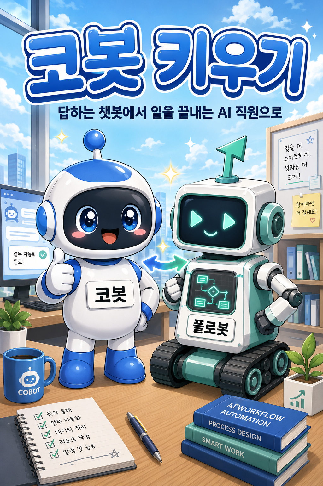
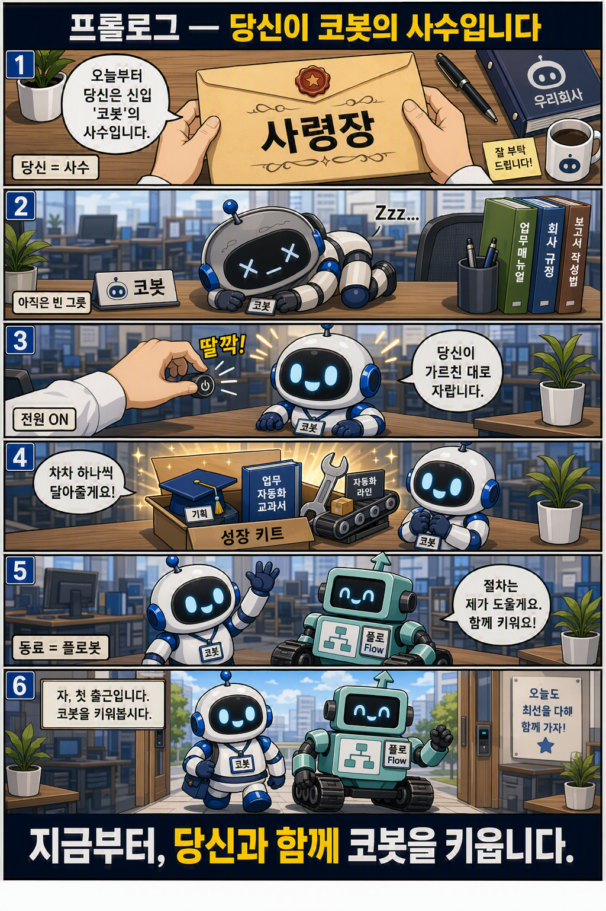

답하는 챗봇에서 일을 끝내는 AI 직원으로
Microsoft Copilot Studio 새 에이전트 경험으로 만드는, 코딩 없는 AI 동료 본문 통합 원고 v2.8 (정식 2장 승격·전면 재번호 반영) · 2026-06-16 · ※ 제품 기능은 2026년 6월 기준(미리보기 포함), 최신 사항은 컴패니언 사이트로 확인.
목차
1부. 왜 지금인가 — 에이전틱 전환과 신버전 읽기
- 1장. 챗봇은 죽었다 — 일을 끝내는 에이전트
- 2장. 새로 지은 집 — 새 에이전트와 새 워크플로우
- 3장. 두 갈래 길 — Agent냐 Workflow냐
- 4장. 지침이 곧 실력 — 코딩이 아니라 일하는 법을 쓰는 일
- 5장. 화면은 주장이다 — 신버전 지도 읽기
2부. 들인다 — 코봇의 정체성을 빚는다
- 6장. 어디에 만들 것인가 — Power Platform 환경
- 7장. 자연어로 코봇이 태어난다 — 출생신고와 두뇌 고르기
- 8장. 지침 쓰기 — 행동매뉴얼의 기술
3부. 가르친다 — 코봇에게 능력을 단다
- 9장. 한 사람이 한 팀처럼 — Skill로 일하는 법을 가르친다
- 10장. 교과서와 기억하는 동료 — 지식과 기억을 단다
- 11장. 손발을 달다 — 도구로 행동하게 한다
- 12장. 후배가 생긴 코봇 — 슈퍼호스트로의 도약
4부. 자동화한다 — 플로봇으로 절차를 엮는다
- 13장. 플로봇의 무대 — Workflows로 절차를 자동화한다
- 14장. 두 갈래 길이 만나다 — Agent와 Workflow를 엮는다
- 15장. 스스로 출근하는 코봇 — 트리거
5부. 다듬는다 — 테스트하고 평가한다
- 16장. Preview — 만들며 바로 확인하기
- 17장. 에이전트의 머릿속 들여다보기
- 18장. Evaluate — 품질을 숫자로
6부. 내보낸다 — 게시·공유하고 관찰한다
- 19장. 게시와 공유 — 코봇을 정식 무대에 세운다
- 20장. Monitor — 배포 후 추적
- 21장. 가드레일·거버넌스·비용, 그리고 ALM
부록
- A. 클래식 경험 / B. 프로코드로 확장 / C. 치트시트 / D. 설계 패턴 / E. 능력 카탈로그 / F. CLI 에이전트 런타임 해부 / G. 용어 빠른 풀이
※ 이 책에서 코봇(Agent)·플로봇(Workflow)은 독자의 이해를 돕기 위해 저자가 붙인 이름으로, Microsoft 공식 용어가 아닙니다.
프롤로그 — 당신이 코봇의 사수입니다

이 책은 한 편의 학습만화로 시작합니다. 각 부의 첫머리에도 그 부의 이야기를 만화로 먼저 만나게 됩니다. 답만 하던 챗봇의 시대를 지나, 지금부터 당신과 함께 코봇을 키웁니다.